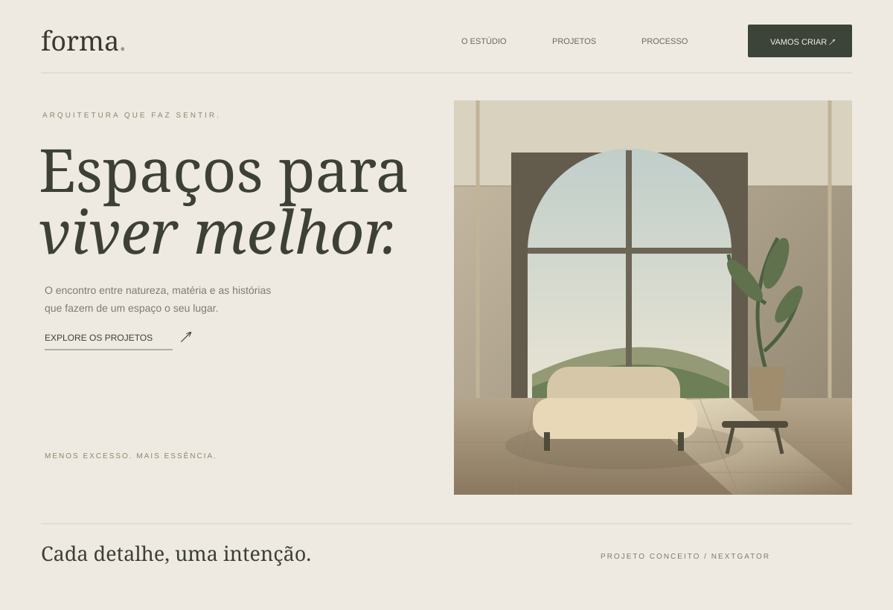

Espaços para viver melhor.
Um estudo de presença digital para um estúdio de arquitetura. Composição editorial, tons minerais e espaço para respirar.

Design nos detalhes.
Estudo visual autoral. Não representa um escritório ou projetos de arquitetura reais.